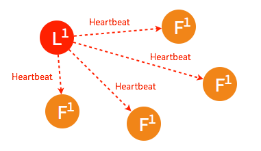
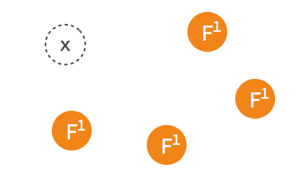
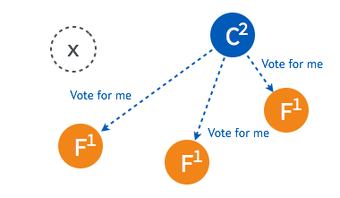
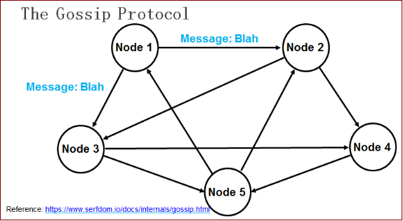

Raft算法和Gossip协议¶
简单介绍下集群数据同步，集群监控用到的两种常见算法。
Raft算法¶
raft 集群中的每个节点都可以根据集群运行的情况在三种状态间切换：follower, candidate 与 leader。leader 向 follower 同步日志，follower 只从 leader 处获取日志。在节点初始启动时，节点的 raft 状态机将处于 follower 状态并被设定一个 election timeout，如果在这一时间周期内没有收到来自 leader 的 heartbeat，节点将发起选举：节点在将自己的状态切换为 candidate 之后，向集群中其它 follower 节点发送请求，询问其是否选举自己成为 leader。当收到来自集群中过半数节点的接受投票后，节点即成为 leader，开始接收保存 client 的数据并向其它的 follower 节点同步日志。leader 节点依靠定时向 follower 发送 heartbeat 来保持其地位。任何时候如果其它 follower 在 election timeout 期间都没有收到来自 leader 的 heartbeat，同样会将自己的状态切换为 candidate 并发起选举。每成功选举一次，新 leader 的步进数都会比之前 leader 的步进数大1。
Raft一致性算法处理日志复制以保证强一致性。
follower 节点不可用¶
follower 节点不可用的情况相对容易解决。因为集群中的日志内容始终是从 leader 节点同步的，只要这一节点再次加入集群时重新从 leader 节点处复制日志即可。
leader 不可用¶
一般情况下，leader 节点定时发送 heartbeat 到 follower 节点。 
由于某些异常导致 leader 不再发送 heartbeat ，或 follower 无法收到 heartbeat 。

当某一 follower 发生 election timeout 时，其状态变更为 candidate，并向其他 follower 发起投票。

当超过半数的 follower 接受投票后，这一节点将成为新的 leader，leader 的步进数加1并开始向 follower 同步日志。

当一段时间之后，如果之前的 leader 再次加入集群，则两个 leader 比较彼此的步进数，步进数低的 leader 将切换自己的状态为 follower。

较早前 leader 中不一致的日志将被清除，并与现有 leader 中的日志保持一致。

Gossip协议¶
传统的监控，如ceilometer，由于每个节点都会向server报告状态，随着节点数量的增加server的压力随之增大。分布式健康检查可以解决这类性能瓶颈，降节点数量从数百台扩至数千台，甚至更多。
Agent在每台节点上运行，可以在每个Agent上添加一些健康检查的动作，Agent会周期性的运行这些动作。用户可以添加脚本或者请求一个URL链接。一旦有健康检查报告失败，Agent就把这个事件上报给服务器节点。用户可以在服务器节点上订阅健康检查事件，并处理这些报错消息。
在所有的Agent之间（包括服务器模式和普通模式）运行着Gossip协议。服务器节点和普通Agent都会加入这个Gossip集群，收发Gossip消息。每隔一段时间，每个节点都会随机选择几个节点发送Gossip消息，其他节点会再次随机选择其他几个节点接力发送消息。这样一段时间过后，整个集群都能收到这条消息。示意图如下。

Gossip协议已经是P2P网络中比较成熟的协议了。Gossip协议的最大的好处是，即使集群节点的数量增加，每个节点的负载也不会增加很多，几乎是恒定的。这就允许Consul管理的集群规模能横向扩展到数千个节点。
Consul的每个Agent会利用Gossip协议互相检查在线状态，本质上是节点之间互Ping，分担了服务器节点的心跳压力。如果有节点掉线，不用服务器节点检查，其他普通节点会发现，然后用Gossip广播给整个集群。
Gossip算法又被称为反熵（Anti-Entropy），熵是物理学上的一个概念，代表杂乱无章，而反熵就是在杂乱无章中寻求一致，这充分说明了Gossip的特点：在一个有界网络中，每个节点都随机地与其他节点通信，经过一番杂乱无章的通信，最终所有节点的状态都会达成一致。每个节点可能知道所有其他节点，也可能仅知道几个邻居节点，只要这些节可以通过网络连通，最终他们的状态都是一致的，当然这也是疫情传播的特点。
要注意到的一点是，即使有的节点因宕机而重启，有新节点加入，但经过一段时间后，这些节点的状态也会与其他节点达成一致，也就是说，Gossip天然具有分布式容错的优点。
Gossip协议实现 serf